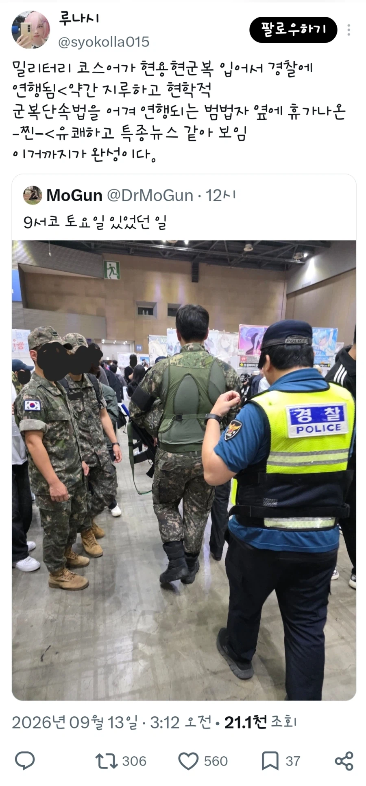
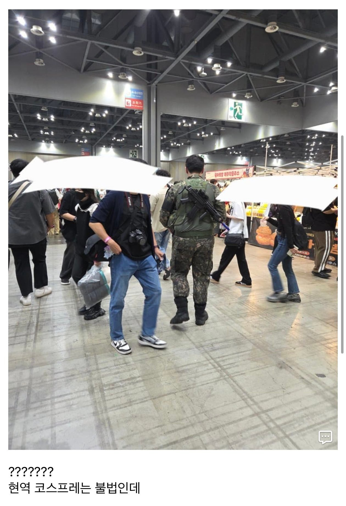
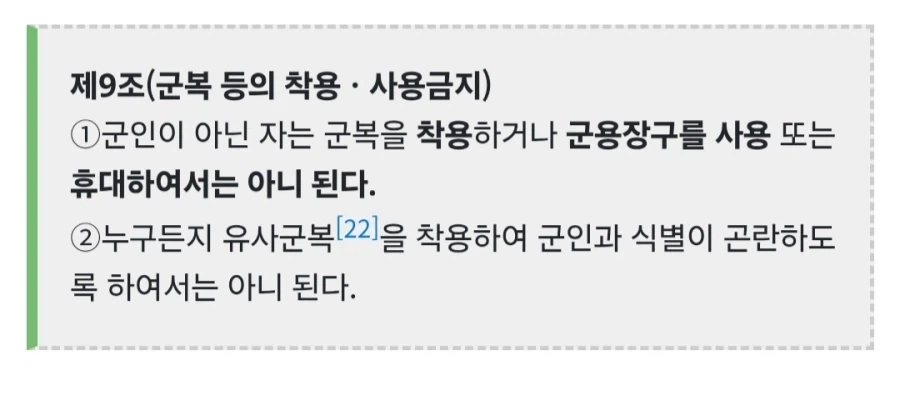

현역 군인이 아닌 민간인이 현용 군복(현재 대한민국 국군이 착용하는 디지털 패턴 전투복 등)을
착용하고 코스프레를 하는 것은 불법
체포 엔딩
그리고 그걸 지켜본 휴가자들



현역 군인이 아닌 민간인이 현용 군복(현재 대한민국 국군이 착용하는 디지털 패턴 전투복 등)을
착용하고 코스프레를 하는 것은 불법
체포 엔딩
그리고 그걸 지켜본 휴가자들
군인이 저런 오타쿠행사 가는건 품위유지 위반 아닌가.
아님
진지하게 뇌 구멍뚫림?
코스프레행사에 대한 무지성 내려치기는 물론이고 군인 목에 개목줄까지 틀어쥐려는 꼰대 댓글이네
전혀...?
오타쿠 행사가 무슨 빡촌임?
휴가나온척 하면 구분할수가 있나?
휴가증이나
신분증으로 알 수 있지 않을까?
그럴수도 있겠지만 일단 쟨 총들고 있자너
예비군 다녀왔다하든지. ㅋㅋ
아니 입지말라는걸 왜 꾸역꾸역 하는거지?
주황색 컬러파츠 빼고 파란걸로 해도되나??
결과는>??????????????